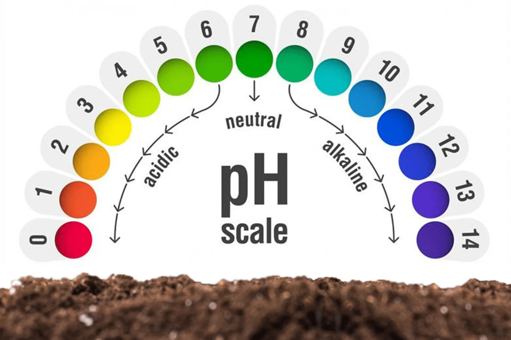

Toprak asitlik dereceleri, pH değerleri ve bitki büyümesi üzerindeki etkileri.
Toprak pH Değeri:
Toprağın pH değeri, asitlik veya alkali seviyesini belirler. pH ölçeği 0 ile 14 arasında değerler alır. 7 nötr pH'yı temsil ederken, 7'den küçük değerler asit, 7'den büyük değerler ise alkali (bazik) ortamları gösterir.
Asit Topraklar (pH < 7): Bu topraklar genellikle bitkiler için zararlı olabilir. Aşırı asitli topraklar, bitkilerin besinleri almasını engelleyebilir ve bazı bitki türlerinin gelişmesini engelleyebilir.
Alkali Topraklar (pH > 7): Aşırı alkali topraklar da bitkiler için uygun olmayabilir. Yüksek alkali seviyeleri bitki köklerinin besinleri emmesini zorlaştırabilir.
Toprak Asitlik Dereceleri:
Toprak asitlik dereceleri, toprağın pH değerine göre şu şekilde sınıflandırılabilir:
Çok Asidik (pH < 5): Bu topraklar genellikle bitkiler için uygun değildir.
Orta Derecede Asidik (pH 5-6.5): Bazı bitki türleri için uygun olabilir, ancak diğerleri için zararlı olabilir.
Nötr veya Hafif Asidik (pH 6.5-7.5): Genellikle bitkiler için en uygun olan pH aralığıdır.
Toprak pH'sı, bitkilerin büyümesini etkiler. Bitkiler, belirli pH aralıklarında en iyi şekilde büyürler. Bu nedenle, toprak pH'sının uygun bir seviyede tutulması bitki sağlığı için önemlidir.
Toprak pH'sının düzenlenmesi, kireçleme veya asitlenme gibi yöntemlerle yapılabilir. Tarım uygulamaları sırasında toprak analizi yaparak pH seviyelerini belirlemek ve buna göre düzenlemeler yapmak önemlidir.
Bilgi Almak İçin Tıkla